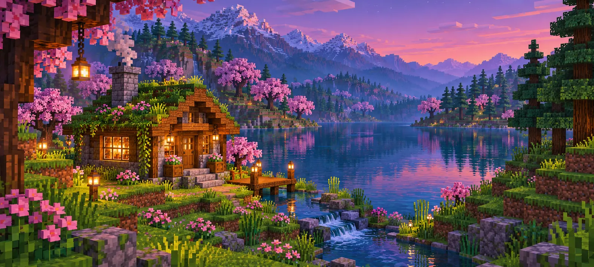

Mcbe2Friends
Bring your Bedrock server to Minecraft’s Friends tab with MCXboxBroadcast.
macOS and Linux downloadsCraft your broadcast
Open the launcher
Download Mcbe2Friends for your computer, extract the archive, and open the app.
Connect your server
Enter your Bedrock address and port. Choose Connect & start, then use the code to sign in with Xbox.
Meet in the Friends tab
When Broadcast live appears, have friends add your Xbox gamertag. Once accepted, they can join from Play → Friends.
Customer walkthrough2:57
Download chest
v1.3.0
Windows10 or 11 · x64 · ZIP
macOSIntel + Apple silicon · ZIP
Linux x64Intel + AMD · TAR.GZ
Linux ARM6464-bit ARM · TAR.GZ
Keep Mcbe2Friends and your Bedrock or Geyser server running while friends play.